Bind logo: dovetail, ring or pearl ring?
Three directions, each with the same parts: lockup, states, animated logo, loader, swipe and a hero. The third is the ring made ownable, keeping the Newsreader and Geist type and the ring's smoothness. Everything is shown at the same size.
1. Logo and lockup
Dovetail STUDY 1
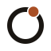
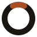
64Ring EARLIER DRAFT


 643216
643216Pearl ring THE RING, MADE OWNABLE


 643216
6432162. As a status light
Each mark doubles as a status indicator, with a label always beside it.
Dovetail STUDY 1
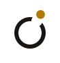
On it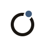
PausedRing EARLIER DRAFT
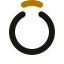
Waiting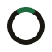
Done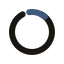
Paused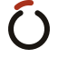
RefusedPearl ring THE RING, MADE OWNABLE
 Waiting
Waiting Done
Done Paused
Paused Refused
Refused3. Animated logo (plays when it scrolls into view; press replay)
Dovetail STUDY 1
Ring EARLIER DRAFT
Pearl ring THE RING, MADE OWNABLE
4. Loading icon
Dovetail STUDY 1
Ring EARLIER DRAFT
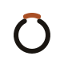
16
Pearl ring THE RING, MADE OWNABLE
 16244896
16244896
5. Landing hero, live (scroll inside each frame, or open the full boards)
Dovetail STUDY 1
Ring EARLIER DRAFT
Pearl ring THE RING, MADE OWNABLE
6. Side by side, assessed
My assessment, not a measurement. Where a row says "tested", I ran it in a browser here.
| Question | Dovetail | Ring | Pearl ring |
|---|---|---|---|
| What it says | Two things joined cleanly; work changes hands. | A loop that closes: a connection made. | A ring that is closed by a single bead. The bead is also the dot of the i, so the logo and the name are one idea. |
| Ownable? | High. An interlocking two-tone block is unusual in software. Some will see a clapperboard or an "H" first. | Low. A ring with an accent is a common shape. | Medium to high. It is a serif "o" with stroke contrast, which is rare for a mark, and it is built from the font you chose. Risk: a ring with a stone can read as jewellery. |
| Smoothness | Soft corners, but hard geometry. | Very smooth: one even round-capped stroke. | Smooth and elegant: curves with thick and thin, no hard joins. |
| Small sizes | Holds at 16 px (tested). | Holds at 16 px (tested), the latch becomes a speck. | The hairline top and bottom thin out at 16 px (tested): it reads as a narrow "o" with a dot. Fine at 24 px and up. This is its weakest point. |
| Fit with the type | Different voice (Bricolage Grotesque). | Geometric mark beside a serif wordmark: slightly mismatched. | Best: the mark and the Newsreader wordmark are the same drawing language. |
| Status as a light | Piece offset and colour. | Latch position and colour. | Pearl lifted, seated or off to the side, with colour. A pearl is easier to see than a thin latch, but "waiting" and "refused" differ mainly by colour and a small sideways shift. Needs a colour-blind user test. |
| My recommendation | The boldest and most distinctive. Different type and palette, so adopting it means leaving the font you like. | The baseline. | Pearl ring, if you want the font and the smoothness and an ownable mark. Dovetail if you would rather have the most distinctive mark and can change the type. |
Not tested for any of them: other operating systems' font rendering, colour-blind users, device performance, trademark clearance. The pearl ring has had less iteration than the dovetail.